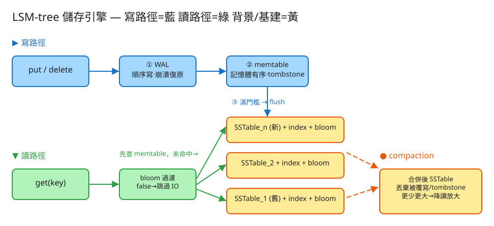

K 分散式系統 建議 50 分鐘 Design an LSM-tree Storage Engine
put(key, value)、get(key)、delete(key)。| 指標 | 假設 | 推算 / 意義 |
|---|---|---|
| 寫入吞吐 | 每筆 200 bytes，5 萬寫/秒 | ~10 MB/s 進 WAL（順序寫，HDD 也扛得住） |
| memtable 大小 | 64 MB 滿即 flush | 每 ~6 秒產生一個 SSTable |
| 寫放大 | leveled，每層放大 ~10×，4 層 | 同一筆資料一生會被 compaction 重寫多次 → 寫放大 ~10～30× |
| 讀放大 | 無 compaction 時，N 個 SSTable | 最壞要查 N 個檔 + memtable；bloom 把多數降到 ~1 次磁碟讀 |
| 空間放大 | 舊版本/tombstone 未回收 | compaction 前可能存多份；壓實後回收 |
# 寫入 / 覆寫
put(key, value) # WAL append → memtable[key] = value
# 刪除（不是真的清掉，而是寫 tombstone）
delete(key) # WAL append → memtable[key] = TOMBSTONE
# 讀取
get(key) -> value | NOT_FOUND
先查 memtable；未命中則由新到舊掃 SSTable（bloom 先過濾）；
第一個命中版本即答案（若是 tombstone → NOT_FOUND）。
# 範圍掃描（key 有序才做得到）
scan(start, end) -> 合併 memtable 與各 SSTable 的有序串流（取每個 key 最新版本）
# 維運操作
flush() # 手動把 memtable 落成 SSTable
compact() # 手動觸發 compaction（合併 SSTable、回收舊版本）
WAL（write-ahead log，順序 append）
每行一筆：{ op: P|D, key, value } -- 崩潰時重播回 memtable
memtable（記憶體有序表，常用跳表 SkipList / 紅黑樹）
key -> value 或 TOMBSTONE -- 可變，最新的寫都在這
SSTable（Sorted String Table，落盤後不可變）
├─ data：key 有序的 (key, value) 區塊（可分 block + 壓縮）
├─ sparse index：每隔幾個 key 記一個偏移，用來定位 block（不必每個 key 都索引）
└─ bloom filter：此 SSTable 含哪些 key 的機率型摘要（常駐記憶體）
manifest：目前有哪些 SSTable、屬於哪一層、key 範圍
✏️ 用 Excalidraw 開啟編輯（diagram.excalidraw）寫路徑（藍）
put/delete ─▶ ① WAL append（順序寫，持久化）
└▶ ② memtable（記憶體有序）
└▶（滿門檻）③ flush ─▶ SSTable_n（不可變）+ index + bloom
清空 memtable、截斷 WAL
讀路徑（綠）
get(key) ─▶ memtable 命中？─是─▶ 回值/NOT_FOUND(tombstone)
└─否─▶ 由新到舊：SSTable_n → … → SSTable_1
每個先問 bloom：mightContain?
false → 跳過（不碰磁碟）
true → 讀該檔；命中即回（含 tombstone）
背景（黃）
compaction：合併多個 SSTable ─▶ 丟棄被覆寫/被刪版本 ─▶ 更少更大的檔每次寫先 append 到 WAL 才改 memtable。memtable 在記憶體，崩潰會丟；但只要 WAL 在，
重啟時把 WAL 重播回 memtable 即可復原。flush 成功後該批資料已在不可變 SSTable，WAL 即可截斷。
（生產上 WAL 寫入要不要 fsync 是延遲 vs 持久性的取捨。）
memtable 超過門檻（如 64MB）→ 整批排序後一次性順序寫成一個 SSTable， 同時建稀疏索引與該檔的 bloom filter。期間可先切一個新的 memtable 繼續接寫，不阻塞寫入。
每個 SSTable 配一個常駐記憶體的 bloom filter。讀一個 key 時，先問每個 SSTable 的 bloom
「可能有嗎」：false = 一定沒有，直接跳過、不開檔（省一次磁碟 I/O）；
true = 可能有（含偽陽性），才真的去讀。沒有 bloom 的話，查一個不存在的 key
得把每個 SSTable 都翻一遍，讀放大會爆炸。bloom 不會偽陰性，所以安全。
| 策略 | 做法 | 偏向 | 代表 |
|---|---|---|---|
| size-tiered | 把大小相近的多個 SSTable 合成更大的一個；同層可有多個重疊 key 範圍 | 寫放大低、空間放大較高、讀放大較高 | Cassandra 預設 |
| leveled | 分層 L0/L1/…；每層內 SSTable key 範圍不重疊，每層容量約上層 10× | 讀放大低、空間放大低、寫放大較高 | LevelDB / RocksDB |
| 瓶頸 | 症狀 | 對策 |
|---|---|---|
| compaction 吃 IO | 背景合併與前台寫搶磁碟頻寬，寫入卡頓（write stall） | 限流 compaction、分離壓實執行緒、用更快磁碟、調整層級觸發門檻 |
| 讀放大 | SSTable 太多，單次 get 要查很多檔 | 加大/更積極 compaction、用 leveled、bloom 調參 |
| bloom 調參 | 偽陽率太高 → 白讀檔；位元太多 → 吃記憶體 | 依每 key bits 與雜湊數 k 平衡偽陽率與記憶體（典型 ~10 bits/key, 1% 偽陽） |
| 大 value | value 大時 compaction 重寫成本高 | KV 分離（如 WiscKey，value 另存 log，LSM 只放 key+指標） |
| 單機容量 | 資料超過單機 | 上層按 key range / hash 分片，每分片各自一棵 LSM（如 Cassandra/HBase） |
| 面向 | LSM-tree | B-tree |
|---|---|---|
| 寫入 | 順序 append → 快、寫放大低 | 就地更新 → 隨機寫、頁分裂，寫放大高 |
| 讀取 | 可能查多層 SSTable（讀放大），靠 bloom 緩解 | 一次樹查找 → 讀延遲低且穩定 |
| 空間 | 舊版本/tombstone 需 compaction 回收 | 就地更新，空間放大低 |
| 背景成本 | compaction 持續吃 IO/CPU | 幾乎無背景重寫 |
| 適用 | 寫密集、時序、計數、訊息 | 讀密集、交易型、需穩定點查 |
本題 demo 把 LSM-tree 的核心邏輯用零依賴 PHP 實作，可直接跑：
src/Bloom.php Bloom filter（位元陣列 + 雙重雜湊 crc32/fnv1a32）；add / mightContain，示範「查不到的 key 不用碰磁碟」與偽陽性。src/LsmEngine.php WAL（崩潰復原）、memtable（有序、tombstone 刪除）、flush（→ 不可變 SSTable + 稀疏索引 + bloom）、get（memtable → 由新到舊掃 SSTable，bloom 先過濾）、compaction（size-tiered 簡化版：合併並丟棄被刪/被覆寫版本）；以 flock 保護共享狀態。public/index.php 路由與測試頁：put/get/delete、看 memtable 內容、SSTable 清單、手動 flush 與 compaction、bloom 命中/跳過統計。# 啟動
cd demo
php -S localhost:8032 -t public
# 連續 put 多筆觸發自動 flush；del 一個 key；get 不存在的 key 看 bloom 跳過；compact 後再 get